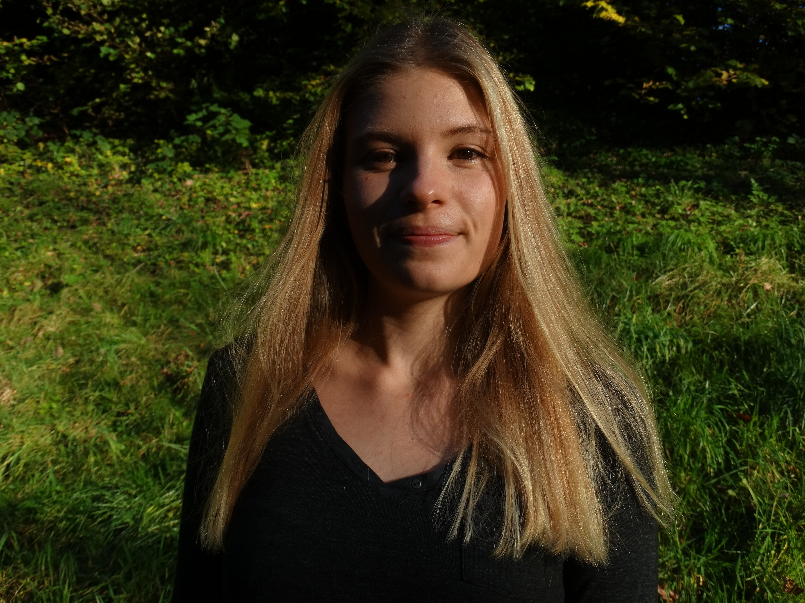
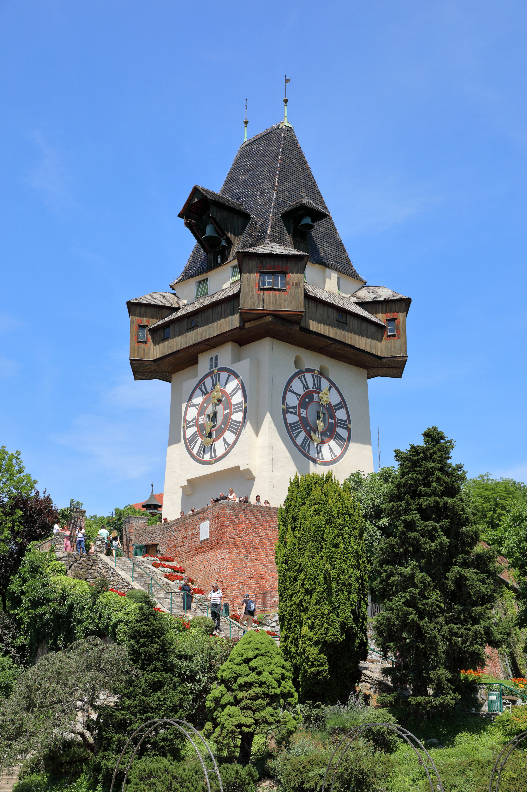
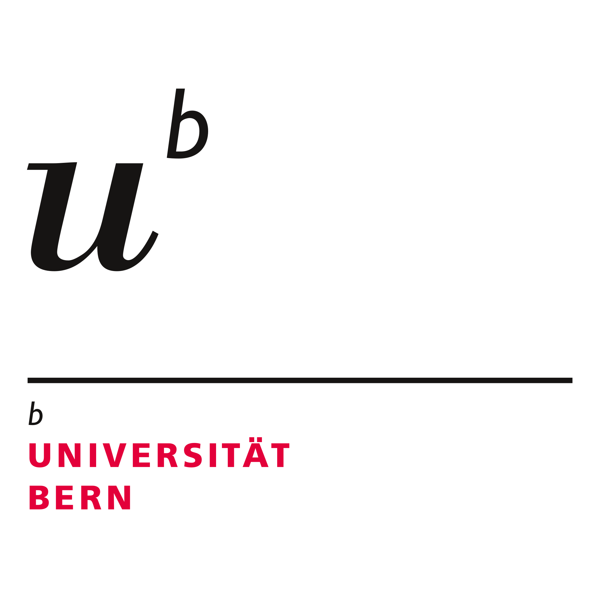

{kind=link}
[1] 8.928571R u Ready? FS2026 | Psychologie der Digitalisierung - Einheit 1
Sandra Grinschgl, Laura Hirt, Lars Schilling
R u Ready? Reproduzierbare Datenaufbereitung und -analyse
FS 2026
LV-Leitung: Dr. Sandra Grinschgl / MSc. Laura Hirt
Tutor: BSc. Lars Schilling
1. Einheit, 18.02.2026
LV-Leitung
Dr. Sandra Grinschgl (sie/ihr)
- Dozentur für «Mensch in digitaler Transformation»
- Arbeitsbereich Psychologie der Digitalisierung
- Fabrikstrasse 8, Raum D 262
- sandra.grinschgl@unibe.ch
- Sprechstunde nach Vereinbarung
- Fun Fact: ist fasziniert davon, wie sich Schweizer:innen den Zahnarzt leisten können

LV-Leitung (2)
Laura Hirt (sie/ihr) (MSc. Psychologie)
Lehrassistenz R you Ready / Methodenberatung
Fabrikstrasse 8, Raum A 263
Sprechstunde/Methodenberatung nach Vereinbarung
laura.hirt@unibe.ch
Weiss nie, ob ich ‘R’ Englisch oder Deutsch aussprechen soll.

LV-Leitung (3)
Lars Schilling (er/ihm)(BSc. Psychologie)
Tutor R you Ready
Fabrikstrasse 8, D266
Sprechstunde nach Vereinbarung
lars.schilling@unibe.ch
Traut seinem mit RStudio selbstgeschriebenem Spotify-Wrapped nicht
Barrierefreiheit!
Bitte melde dich auf einem für dich angemessenem Weg bei uns, wenn dir in dieser Lehrveranstaltung Barrieren begegnen, die auszugleichen sind.
Pronomen/Namen
Bitte gebt uns auch Bescheid, falls wir euch falsch ansprechen!
Illustration: Freepik
Wir hoffen es ist für alle in Ordnung wenn wir uns Duzen!
Österreichisch vs. Berndeutsch
Bitte gebt mir/uns auch Bescheid, solltet ihr etwas nicht verstehen! Seht es uns nach, falls wir etwas nicht verstehen und nachfragen!

Organisatorisches
🕝 Immer Mittwochs um 12:15 (Gruppe Laura) / 16:15 (Gruppe Sandra)
📍Fabrikstrasse 8, Raum B101
💻 Eigener Laptop mit R-Studio notwendig
📁Unterlagen auf ILIAS und Website
📅 14 Einheiten
🛫 Maximal 2 unentschuldigte Fehltermine
Website: Navigation und Inhalte
Auf Quarto Website:
Alle Präsentationen
- Auch als PDF verfügbar (PDF-Mode) –> Download über “Drucken”
Alle Hands On Übungen & R Hausübungen
Muddiest Points & FAQ
Administrative Infos, z. B. Details zum Leistungsnachweis
Auf ILIAS
Downloads
Uploads (d.h. Abgaben)
Forum für Fragen und Peer Feedback
Umfragen
Themen der Lehrveranstaltung
Ziele
Methodenkenntnisse in R auffrischen & festigen
Transfer von Statistik-Bachelorwissen auf Datenaufbereitung & -analyse
Erwerb konzeptueller & praktischer Kompetenzen
Ablauf
Datenanalyseplan & Codebook
R Basics
Reproduzierbare Datenaufbereitung (u.a. mit tidyverse)
Reproduzierbare Datenanalyse (u.a. mit tidyverse)
Format
Präsenz: Input & Anwendung
Hausübungen & Abschlussprojekt
Lernziele
Konzeptionell: Schritte der Datenaufbereitung und -analyse im Analyseplan begründen (WAS muss ich tun & WARUM)
Praktisch: Reproduzierbare Datenaufbereitung (WIE Daten in ein analysierbares Format bringen)
Praktisch: Reproduzierbare Datenanalyse (WIE Fragestellungen und Hypothesen testen)
Nach dem Seminar können Studierende
Grundkenntnisse in R / RStudio anwenden
Notwendige Schritte für reproduzierbare Datenaufbereitung und -analyse überblicken und praktisch umsetzen
Selbständig neue Analyse-Herausforderungen bewältigen und passende Ressourcen nutzen
Was das Seminar nicht leisten kann:
Keine Auffrischung der Statistikvorlesungen
Kein “Schritt-für-Schritt Kochbuch” für die Analyse der Masterarbeit
Leistungsbeurteilung
Mitarbeit: 14 Punkte
Regelmässige Hausübungen: 8x, gesamt 32 Punkte
Abschlussprojekt: 54 Punkte
-> Total 100 Punkte
Genauere Informationen zum Leistungsnachweis hier: Leistungsnachweis Website
–> Update im Laufe des Semesters
Kontinuierliche Arbeit während dem Semester!
Aufwand: 5ECTS für erfolgreichen Abschluss des Seminars -> +- 9h pro Woche
Leistungsnachweis: Mitarbeit (14 Punkte)
… kann unterschiedlich ausfallen zum Beispiel:
Wortmeldungen im Plenum
Aktive Teilnahme an den Hands On Sessions
Beteiligung an Online-Foren & Error Hunt
Punktevergabe:
7 Punkte durch LV-Leitung
7 Punkte durch Selbstevaluation
Leistungsnachweis: Hausübungen (32 Punkte)
8 Hausübungen - 4 oder 8 Punkte pro Hausübung
Bewertungsrelevant: Auseinandersetzung mit dem Stoff/den aufgetragenen Aufgaben.
Korrektheit zweitrangig.
Leistungsnachweis: Abschlussprojekt (54 Punkte)
Vorgegebenes Paper aber individuelle, simulierte Datensätze
Datenanalyseplan überarbeiten/ergänzen
Kontinuierliche Führung/Überarbeitung eines Codebooks
Reproduzierbare Datenaufbereitung und Analyse mit Quarto
Abgabe: Datenanalyseplan, Codebook, Datenfiles, Analyseskript(e) nach vorgegebener Ordnerstruktur
Deadline: 14.06.2026
-> Weitere Informationen im Verlauf des Semesters
Fehlerkultur
“Ich verliere nie. Entweder ich gewinne oder ich lerne” - Nelson Mandela
“Auch Umwege erweitern unseren Horizont” - Ernst Ferstl
“Wege entstehen dadurch dass wir sie gehen” - Franz Kafka
“Failure is not the opposite of success, its part of it” - Karamo Brown in Queer Eye
“Den grössten Fehler, den man im Leben machen kann, ist, immer Angst zu haben einen Fehler zu machen” - Dietrich Bonhoeffer
Syllabus
Begleitende Literatur
Wickham, H., Cetinkaya-Rundel, & Grolemund, G., &. (2023). R for Data Science. O’Reilly Media. https://r4ds.hadley.nz/
Ellis, A., & Mayer, B. (2024). Einführung in R. https://methodenlehre.github.io/einfuehrung-in-R/
Weitere nützliche Ressourcen:
Tidyverse cheat sheets https://posit.co/resources/cheatsheets/
Luhmann, M. (2020). R für Einsteiger. Beltz.
Unterstützungsangebote
Mit vorhanden Ressourcen arbeiten: Unterlagen aus dem Bachelor + Online-Ressourcen (auch LLMs)
Online-Forum für Peer-to-Peer und Peer-to-Teacher Fragen; Mitarbeitspunkte für Code-Error-Hunt
Sprechstunde für «R Troubles» mit Lars –> vor/nach/während den Einheiten + bei Bedarf
Erhebung & Besprechung der «Muddiest Points»
Musterlösungen zu Übungen werden blockweise auf der Kurswebsite ergänzt
Anwesenheit prüfen / Kennenlernen
Warum R?
Es gibt viele Gründe die für R sprechen:
R kann mehr
R ist aktuell
R ist ansprechbar
R schläft nicht
R ist nachgefragt
R ist Open Source & somit kostenlos
Quelle: Luhmann, 2019.
Jetzt: Hands On!
Übungen auf der Website!
In eigenem Tempo arbeiten, nicht stressen lassen!
Helft euren Sitznachbar:innen
Meldet euch bei uns!
Für die sehr schnellen Personen —> Bedarfsanalyse auf ILIAS (siehe Sitzung 1).
Bedarfsanalyse
Bitte reflektiere das im Bachelor erworbene Wissen und überlege wo Aufholbedarf im Bezug auf die Datenaufbereitung und -analyse mit R besteht. Du kannst die zentralen Unterlagen des Bachelor-Studiums (z.B. zu den Statistikvorlesungen) im Ilias Kurs “Masterarbeit Psychologie” einsehen.
Anonyme Umfrage um
Präferenz für das Peer-Pairing zu erfragen
Vorkenntnisse zu erfassen
Bedarf an R-Unterstützung zu erfassen
Umfrage in ILIAS, Deadline Sonntag 22.02., 23:55
Heute haben wir…
R bzw. RStudio und wichtige Pakte darin installiert
Uns mit der Oberfläche von R-Studio bekannt gemacht
Erste Operationen in R ausgeführt:
Einfache Rechnungen
Erste Zuweisungen mit
<-Vektoren erstellt
Erste Funktionen aufgerufen ( z.b.
sum()
-> Fortsetzung in EH 2
Methodenberatung
Bis nächste Woche!
Bedarfsanalyse auf ILIAS (Sitzung 1) bis Sonntag ausfüllen!
